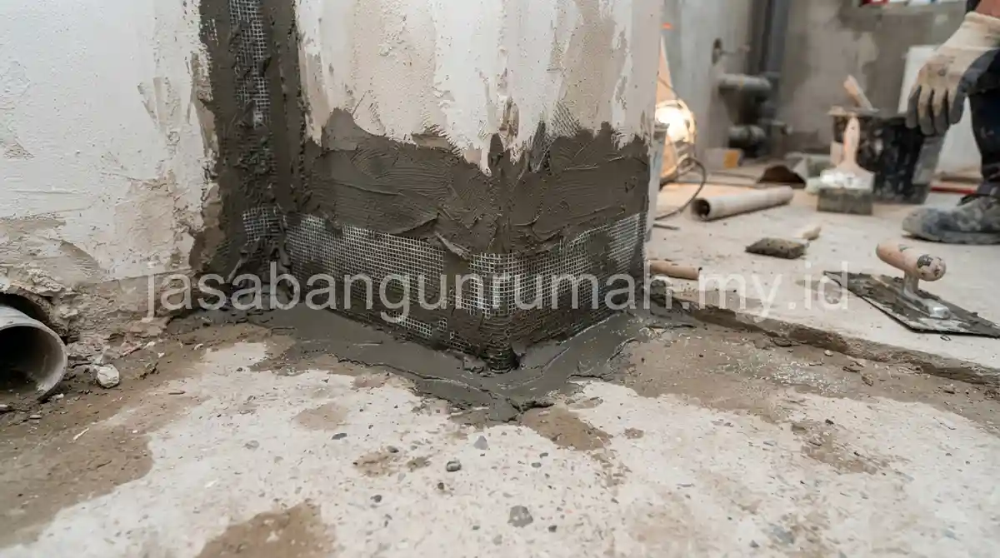

Daftar Isi
Rembesan pada kamar mandi lantai 2 umumnya diatasi dengan mengaplikasikan semen slurry waterproofing dua komponen pada area sambungan lantai dan dinding, sebelum lapisan keramik akhir dipasang kembali.
Apa Penyebab Utama Kamar Mandi Lantai 2 Rembes ke Lantai Bawah?
Rembesan pada kamar mandi lantai 2 umumnya disebabkan oleh retak halus pada sambungan lantai dan dinding, kebocoran pada pipa yang tertanam di dalam lantai, atau lapisan waterproofing lama yang sudah menurun kualitasnya seiring waktu.
Area yang paling rawan biasanya berada di sekitar lubang saluran pembuangan lantai dan sudut pertemuan antara dinding dengan lantai, karena titik ini mengalami pergerakan kecil akibat perubahan suhu dan kelembapan yang berulang setiap hari.
Bagaimana Cara Aplikasi Waterproofing Semen Slurry Dua Komponen?
Waterproofing semen slurry dua komponen (campuran bubuk semen khusus dan cairan polimer) adalah pilihan terbaik untuk area basah karena sifatnya yang kedap air namun tetap fleksibel mengikuti pergerakan struktur. Berikut adalah langkah-langkah aplikasinya:
- Persiapan Permukaan: Bersihkan permukaan lantai beton dan dinding dari debu, minyak, sisa semen, dan kotoran lainnya. Pastikan permukaan dalam keadaan lembap (tidak tergenang air) sebelum aplikasi.
- Pencampuran: Tuangkan cairan polimer (komponen A) ke dalam wadah bersih, lalu masukkan bubuk semen (komponen B) secara perlahan sambil diaduk menggunakan mixer listrik kecepatan rendah hingga rata dan tidak ada gumpalan.
- Aplikasi Lapisan Pertama: Kuaskan campuran waterproofing ke seluruh permukaan lantai dan naik ke dinding setinggi minimal 20-30 cm. Gunakan kuas atau roll dengan gerakan searah (misalnya horizontal). Biarkan mengering selama 2-4 jam.
- Pemasangan Serat Fiber (Opsional namun Disarankan): Pada area sudut pertemuan lantai dan dinding, serta di sekeliling pipa pembuangan (floor drain), tempelkan serat fiber (fiberglass mesh) saat lapisan pertama masih basah untuk memperkuat area yang rawan retak.
- Aplikasi Lapisan Kedua: Setelah lapisan pertama kering sentuh, aplikasikan lapisan kedua dengan arah menyilang (vertikal) dari lapisan pertama. Tujuannya agar pori-pori yang terlewat pada lapisan pertama dapat tertutup sempurna.
- Uji Rendam (Tes Banjir): Setelah lapisan kedua kering sempurna (biasanya 24 jam), lakukan uji rendam dengan menggenangi kamar mandi setinggi 5 cm selama 1x24 jam. Jika tidak ada penurunan debit air dan tidak ada rembesan di plafon lantai bawah, maka waterproofing berhasil.

Area Mana Saja yang Paling Penting Dilapisi Waterproofing?
Tidak semua bagian kamar mandi memiliki tingkat risiko kebocoran yang sama. Area yang paling penting dan wajib dilapisi waterproofing meliputi:
- Seluruh Permukaan Lantai: Wajib dilapisi secara merata tanpa ada bagian yang terlewat.
- Sudut Pertemuan Lantai dan Dinding: Area ini paling sering retak akibat pergerakan struktur. Wajib dilapisi waterproofing dan diperkuat dengan serat fiber.
- Dinding Area Basah (Shower/Bak Mandi): Dinding yang sering terkena cipratan air harus dilapisi waterproofing setinggi minimal 150 cm hingga 200 cm dari lantai.
- Dinding Area Kering: Cukup dilapisi setinggi 20 cm hingga 30 cm dari lantai (membentuk seperti bak/kolam dangkal).
- Sekeliling Pipa Pembuangan (Floor Drain & Kloset): Celah antara pipa PVC dan beton sangat rawan bocor. Pastikan area ini diisi dengan semen grouting (non-shrink grout) lalu dilapisi waterproofing tebal.
Bagi pemilik rumah yang mengalami rembesan kamar mandi lantai 2 dan tidak ingin mengambil risiko perbaikan yang berulang, dapat menghubungi jasa renovasi profesional kami untuk konsultasi penanganan waterproofing yang tepat sesuai standar konstruksi.